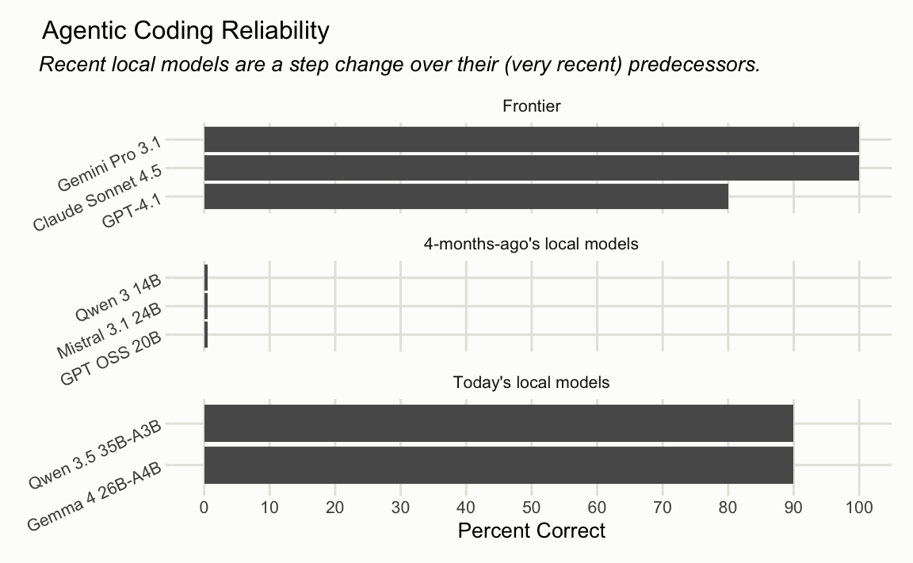

![Performance of various AI models across three categories: Frontier (closed-source commercial models), Budget (smaller commercial models), and Local (open-source models that can run locally). In the Frontier category, Claude Sonnet 4.5 achieves the highest accuracy at approximately 95%, followed by Gemini Pro 2.5 at around 85% and GPT-4.1 at roughly 82%. The Budget and Local categories show significantly lower performance, with Claude Haiku 4.5 leading Budget models at about 95% accuracy, while the local open-source models (Qwen Coder, Mistral, and GPT OSS) all score near 0% correct.](https://www.simonpcouch.com/blog/2025-12-04-local-agents/index_files/figure-html/plot-accuracy-1.png)
In December, I wrote a post called “Local models are not there (yet).” It concluded like so:
In the medium run (1-2 years?), I’d love for it to be the case that you can run a Claude Sonnet 4-ish model on a base Macbook Pro, and I think that’s a plausible future. For now, though, if you’d like to get value out of coding agents, you’ll need to opt for the most capable models out there.
With the release of Qwen 3.5 and Gemma 4 in the last few weeks, we feel much closer to that reality.
helperbench
In that post, I introduced an LLM evaluation called helperbench that I used to help make the argument. helperbench situates a Claude Code ripoff-ish coding agent in a directory and asks it to make a simple refactor. To complete the refactor, the model must find where the referenced lines are in the directory, extract the lines out of a function into a helper function (in R), and then remove the old code and call the new helper function instead. The altered source code is then run against a suite of unit tests.
It’s like the most lame SWE-Bench you could imagine. There’s literally one sample, and the proportion of successes across 10 runs determines the score. Despite how simple the eval is, it does show substantive separation between frontier models and models small enough to run on my laptop:
I describe the eval more at length in my previous post.
New models
A month or so ago, the Qwen team released Qwen 3.5, including a qwen-3.5-35b-a3b variant. Then, a couple weeks ago, Deepmind released Gemma 4. The gemma4-26b-a4b variant particularly caught my eye. I’ll say “Qwen 3.5” and “Gemma 4” from here on in the post in reference to qwen-3.5-35b-a3b and gemma4-26b-a4b, respectively.
The results for these two new releases show how far we’ve come in a matter of 4 months1:

A few months ago, no model that I could comfortably run on my laptop could complete a single successful pass on the eval. Gemma 4 and Qwen 3.5 got it right all but one time.2
Note
Noting that “frontier” section includes GPT 4.1, which is quite out of date compared to the entries from the other frontier labs. GPT 5.4 got a 5/10 on this eval with thinking set to “Minimal”, and I don’t think “GPT 5.4 is bad” is a fair point to try and make using this eval.
Now, is Gemma 4 as good as Sonnet 4? Eh.3 Is it broadly coherent? Yes. Can it make use of a coding agent harness it hasn’t seen before? Yes. Is it usable as a coding agent in the way that 10-months-ago Claude Code was with Sonnet 4? I would say yes.
Latency
The big question that helperbench can’t address is latency. In order to be usable as a coding agent, a model running on my laptop must be able to chew through 5,000 tokens of context and tool descriptions relatively quickly, be able to output tokens in a ballpark of the rate that cloud models can, and leave enough room in my laptop’s memory to store (at least) the 5,000 tokens of context and tool descriptions in the KV cache so that, after the first response, the model can reply more quickly to me.
My laptop is a 2024 M4 Pro with 48GB memory. It is a nice laptop.
To measure the latency, I sent Gemma 4 a ~5,000 token system prompt (the one used by side::kick()) via ollama and measured the response timings. On a cold start—where the model has to process the full prompt from scratch—it takes about 7 seconds before the first token arrives, processing at roughly 690 tokens per second. Once the KV cache is warm (i.e. the system prompt prefix is already cached from a previous turn), that drops to around 20 milliseconds. Output generation runs at about 53 tokens per second. For comparison, Artificial Analysis benchmarks Claude Sonnet 4.6 via Anthropic’s API at ~44 output tokens per second and a ~1.4 second time to first token, though this isn’t quite apples-to-apples. The output speed is surprisingly close to Gemma 4 running on my laptop.
Benchmark source code
library(httr2)
library(jsonlite)
# -- config ------------------------------------------------------------------
ollama_model <- "gemma4:26b"
n_runs <- 5
# -- system prompt ------------------------------------------------------------
# Use side::kick()'s real system prompt for realistic context size.
# Download once if not cached locally.
prompt_path <- "system_prompt.md"
if (!file.exists(prompt_path)) {
download.file(
"https://raw.githubusercontent.com/simonpcouch/side/main/inst/agents/main.md",
prompt_path
)
}
system_prompt <- paste(readLines(prompt_path), collapse = "\n")
# Minimal tool definitions — just enough to be realistic about token count.
# These mirror the shape of side::kick()'s tools.
tools <- list(
list(
name = "read_text_file",
description = "Read the contents of a text file at the given path.",
input_schema = list(
type = "object",
properties = list(
path = list(type = "string", description = "Absolute path to the file"),
start_line = list(type = "integer", description = "First line to read (1-indexed)"),
end_line = list(type = "integer", description = "Last line to read (1-indexed)")
),
required = list("path")
)
),
list(
name = "write_text_file",
description = "Write content to a text file, creating it if needed.",
input_schema = list(
type = "object",
properties = list(
path = list(type = "string", description = "Absolute path to the file"),
content = list(type = "string", description = "Content to write"),
create_directories = list(type = "boolean", description = "Create parent dirs if needed")
),
required = list("path", "content")
)
),
list(
name = "shell",
description = "Execute a shell command and return stdout/stderr.",
input_schema = list(
type = "object",
properties = list(
command = list(type = "string", description = "The shell command to run"),
timeout = list(type = "integer", description = "Timeout in seconds")
),
required = list("command")
)
),
list(
name = "run_r_code",
description = "Run R code in the current session and return the result.",
input_schema = list(
type = "object",
properties = list(
code = list(type = "string", description = "R code to evaluate")
),
required = list("code")
)
),
list(
name = "list_files",
description = "List files in a directory, optionally filtered by glob pattern.",
input_schema = list(
type = "object",
properties = list(
path = list(type = "string", description = "Directory path"),
pattern = list(type = "string", description = "Glob pattern to filter files"),
recursive = list(type = "boolean", description = "Whether to list recursively")
),
required = list("path")
)
),
list(
name = "code_search",
description = "Search for a pattern across files in the project.",
input_schema = list(
type = "object",
properties = list(
pattern = list(type = "string", description = "Regex pattern to search for"),
path = list(type = "string", description = "Directory to search in"),
file_pattern = list(type = "string", description = "Glob to filter files")
),
required = list("pattern")
)
)
)
user_message <- "Please extract the input validation logic from the `fit()` method in R/model.R into a helper function called `check_fit_inputs()`. The validation is on lines 42-68."
# -- ollama benchmarking ------------------------------------------------------
# Ollama returns timing metadata in the final streamed chunk:
# prompt_eval_count, prompt_eval_duration (ns),
# eval_count, eval_duration (ns)
# Convert tools to ollama format (slightly different schema shape)
ollama_tools <- lapply(tools, function(tool) {
list(
type = "function",
`function` = list(
name = tool$name,
description = tool$description,
parameters = tool$input_schema
)
)
})
bench_ollama <- function(model, system, user_msg, tools, warm = FALSE) {
if (!warm) {
# Overwrite the KV cache with a short unrelated message so the benchmark
# request won't hit the cached prefix. The model stays loaded in memory.
try(
request("http://localhost:11434/api/chat") |>
req_body_json(list(
model = model,
messages = list(list(role = "user", content = "Say hi.")),
stream = FALSE
)) |>
req_timeout(120) |>
req_perform(),
silent = TRUE
)
}
body <- list(
model = model,
messages = list(
list(role = "system", content = system),
list(role = "user", content = user_msg)
),
tools = tools,
stream = FALSE
)
start <- proc.time()["elapsed"]
resp <- request("http://localhost:11434/api/chat") |>
req_body_json(body) |>
req_timeout(300) |>
req_perform()
wall_time <- proc.time()["elapsed"] - start
data <- resp_body_json(resp)
prompt_tokens <- data$prompt_eval_count %||% NA
prompt_ns <- data$prompt_eval_duration %||% NA
eval_tokens <- data$eval_count %||% NA
eval_ns <- data$eval_duration %||% NA
list(
prompt_tokens = prompt_tokens,
input_throughput = if (!is.na(prompt_tokens) && !is.na(prompt_ns) && prompt_ns > 0) {
prompt_tokens / (prompt_ns / 1e9)
} else NA,
ttft = if (!is.na(prompt_ns)) prompt_ns / 1e9 else NA,
output_tokens = eval_tokens,
output_toks = if (!is.na(eval_tokens) && !is.na(eval_ns) && eval_ns > 0) {
eval_tokens / (eval_ns / 1e9)
} else NA,
wall_time = wall_time
)
}
# -- persistence --------------------------------------------------------------
results_dir <- "benchmark_results"
if (!dir.exists(results_dir)) dir.create(results_dir)
save_result <- function(scenario, i, result) {
path <- file.path(results_dir, sprintf("%s_%02d.json", scenario, i))
writeLines(toJSON(result, auto_unbox = TRUE, pretty = TRUE), path)
cat(" -> saved to", path, "\n")
}
# -- run benchmarks -----------------------------------------------------------
run_benchmarks <- function() {
cat("=== Ollama:", ollama_model, "===\n")
cat("\n-- Cold (no KV cache) --\n")
ollama_cold <- lapply(seq_len(n_runs), function(i) {
cat(" Run", i, "of", n_runs, "\n")
res <- bench_ollama(ollama_model, system_prompt, user_message, ollama_tools, warm = FALSE)
save_result("ollama_cold", i, res)
res
})
cat("\n-- Warm (KV cache) --\n")
# First request primes the cache
bench_ollama(ollama_model, system_prompt, user_message, ollama_tools, warm = FALSE)
ollama_warm <- lapply(seq_len(n_runs), function(i) {
cat(" Run", i, "of", n_runs, "\n")
res <- bench_ollama(ollama_model, system_prompt, user_message, ollama_tools, warm = TRUE)
save_result("ollama_warm", i, res)
res
})
# -- summarize ----------------------------------------------------------------
median_of <- function(lst, field) median(sapply(lst, `[[`, field), na.rm = TRUE)
cat("\n\n=== Results (medians over", n_runs, "runs) ===\n\n")
cat(sprintf("%-30s %15s\n", "", ollama_model))
cat(strrep("-", 46), "\n")
cat(sprintf("%-30s %14.1f\n", "Input throughput (tok/s)", median_of(ollama_cold, "input_throughput")))
cat(sprintf("%-30s %13.2fs\n", "TTFT (cold)", median_of(ollama_cold, "ttft")))
cat(sprintf("%-30s %13.2fs\n", "TTFT (warm)", median_of(ollama_warm, "ttft")))
cat(sprintf("%-30s %14.1f\n", "Output (tok/s)", median_of(ollama_cold, "output_toks")))
}
run_benchmarks()Here’s what Gemma 4 feels like real-time running on my laptop with Posit Assistant, a coding agent with a ~10,000 token system prompt:
There’s a ~15-second hang while the model crunches my prompt the first time, and then the latency is totally normal—snappy, even—from then on.
Are we there yet?
The question of whether these models are actually good enough to offset usage of other models likely depends on:
- Your ability to pay for frontier models’ tokens. It is not difficult to spend three figures in a day on tokens when coding with Opus 4.6 and GPT 5.4.
- The hardware you have available to you. My laptop is a nice laptop, much nicer than a median consumer laptop. If my laptop were not able to run a 26b-a4b-ish model comfortably, I don’t know that there are very viable options below that (for running coding agents specifically).
- Your use cases. Gemma 4 is not even close to a broadly competent coding partner in the way that Opus 4.6 is. However, it’s certainly good enough to keep me broadly unblocked on a couple-hour flight and take care of annoying little boilerplate and terminal-fu.
At least for folks in my situation—working on a nice laptop with some sense of thrift and an appreciation for (dependence on?) being able to offload small tasks—we might be there.
Revisiting that prediction from a few months ago:
In the medium run (1-2 years?), I’d love for it to be the case that you can run a Claude Sonnet 4-ish model on a base Macbook Pro, and I think that’s a plausible future. For now, though, if you’d like to get value out of coding agents, you’ll need to opt for the most capable models out there.
My Macbook Pro is not a base model laptop and Gemma 4 isn’t quite Sonnet 4, but it’s been four months. A Sonnet 4-ish model on a base Macbook Pro in a year feels totally possible, and that’s pretty wild.
Footnotes
Thanks to Garrick Aden-Buie for running helperbench against Qwen 3.5 a couple weeks ago.↩︎
Feels worth noting that Gemma 4 (26B total, 4B active) and Qwen 3.5 (35B total, 3B active) have more total parameters than the local models from the previous post (14-24B dense). However, both are mixture-of-experts models that only activate 3-4B parameters per token. All experts must be stored in memory, so a 26-35B MoE model takes roughly the same RAM as a dense model of similar total size. The difference is inference speed: because only a fraction of parameters are active per token, MoE models run much faster (comparable to a 3-4B dense model). This is what makes them viable as coding agents on a laptop; a 30B dense model (like Qwen 3 Coder 30B, which got 7/10 when I ran it as part of the last post) would technically fit in memory but would be far too slow for interactive use.↩︎
Though I do think it’s worth noting that Sonnet 4 was likely not as good as you’re remembering. Sonnet 4 was released in May 2025. With this model, the version of Claude Code available at the time was relatively usable, but it did stupid shit all the time and constantly needed to be interrupted and steered. Gemma 4 also does stupid shit all the time and has to be interrupted and steered.↩︎